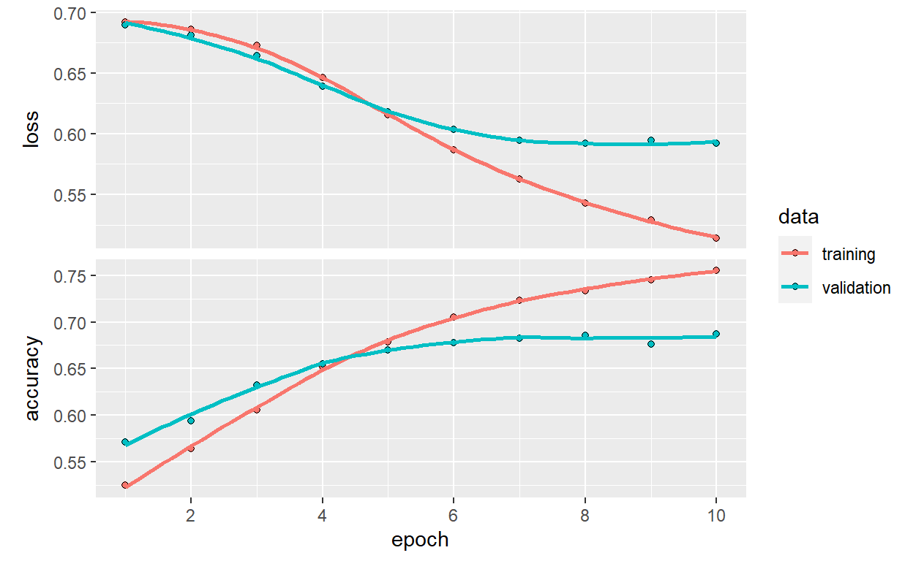
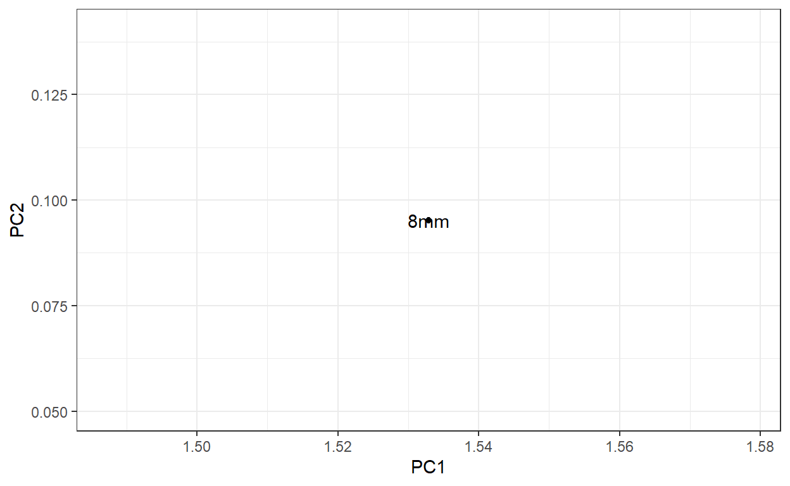
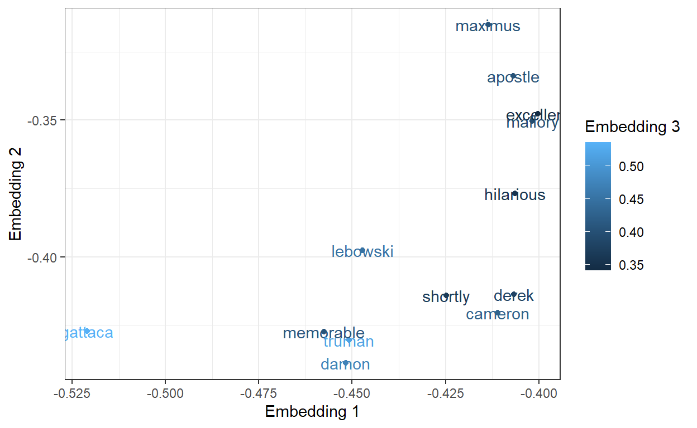

In this post we will walk through text classification using keras in R.
This problem is a binary classification problem. So we have a text-based data set and a binary response variable.
Rows: 64,720
Columns: 6
$ fold_id <dbl> 0, 0, 0, 0, 0, 0, 0, 0, 0, 0, 0, 0, 0, 0, 0, 0, 0, 0~
$ cv_tag <chr> "cv000", "cv000", "cv000", "cv000", "cv000", "cv000"~
$ html_id <chr> "29590", "29590", "29590", "29590", "29590", "29590"~
$ sent_id <dbl> 0, 1, 2, 3, 4, 5, 6, 7, 8, 9, 10, 11, 12, 13, 14, 15~
$ text <chr> "films adapted from comic books have had plenty of s~
$ tag <chr> "pos", "pos", "pos", "pos", "pos", "pos", "pos", "po~The data appears to have over 60,000 rows, each containing a movie
review in the text column with a response in the
tag column for pos or neg (of the
review).
# A tibble: 2 x 2
tag n
<chr> <int>
1 neg 31783
2 pos 32937df$text[1][1] "films adapted from comic books have had plenty of success , whether they're about superheroes ( batman , superman , spawn ) , or geared toward kids ( casper ) or the arthouse crowd ( ghost world ) , but there's never really been a comic book like from hell before ."It might be useful to know the number of words in each review.
We will make the text a tensor. The most common 10,000
words will be specified by an integer. Every sequence will be
represented by a sequence of integers.
# total words to account ids for, otherwise drop - this becomes the [UNK] token to represent unknown characters.
num_words <- 10000
# per sequence, how many words to keep, or pad to
max_length <- 50
# Fit the parameters into the vectorizer
text_vectorization <- keras::layer_text_vectorization(
max_tokens = num_words,
output_sequence_length = max_length
)Next we will adapt the Text Vectorization. Once we
adapt the layer will learn unique words in our dataset and
assign integer values for each.
# Notice they are all tokeninzed and lower cased nice and neat.
get_vocabulary(text_vectorization)[1:100] [1] "" "[UNK]" "the" "a" "and"
[6] "of" "to" "is" "in" "that"
[11] "it" "as" "with" "for" "his"
[16] "this" "film" "but" "he" "i"
[21] "on" "are" "by" "be" "its"
[26] "an" "not" "one" "movie" "who"
[31] "from" "at" "was" "have" "has"
[36] "her" "you" "they" "all" "so"
[41] "like" "about" "out" "more" "when"
[46] "which" "their" "up" "or" "what"
[51] "some" "just" "if" "there" "she"
[56] "him" "into" "even" "only" "than"
[61] "no" "we" "good" "most" "time"
[66] "can" "will" "story" "films" "been"
[71] "would" "much" "also" "characters" "other"
[76] "get" "character" "do" "them" "very"
[81] "two" "first" "after" "see" "well"
[86] "because" "way" "make" "any" "does"
[91] "really" "had" "too" "while" "how"
[96] "little" "life" "where" "were" "plot" Lets convert one sample. Since tensorflow will only accept matrices, we will transform that sample into a matrix and pass it in. Out comes the 1x50 vector transformation.
# Lets convert one sample
x <- matrix(df$text[1], ncol=1)
# Since tensorflow will ONLY accept matrices, we have to make it a fat 1x1 matrix and throw it in. Out comes a 1x50
text_vectorization(x)tf.Tensor(
[[ 68 2835 30 359 1662 33 91 1056 5 632 631 321 41 7803
709 4865 1767 48 7600 1337 398 5161 48 2 1 1808 1800 148
17 140 109 90 69 3 359 408 40 30 503 142 0 0
0 0 0 0 0 0 0 0]], shape=(1, 50), dtype=int64)# Out comes a 1x50. It looks to be rightside padded.input <- layer_input(shape = c(1), dtype = "string")
output <- input %>%
#custom layer, input text; output tensor
text_vectorization() %>%
# produce 16 new dimensions for each sentiment
layer_embedding(input_dim = num_words, output_dim = 16) %>%
# average over the new 16 dimensions
layer_global_average_pooling_1d() %>%
layer_dense(units = 16, activation = "relu") %>%
layer_dropout(0.5) %>%
layer_dense(units = 1, activation = "sigmoid")
model <- keras_model(input, output)I politely steal this from the documentation,
So the word embedding layerdoes indeed
expand the dimensions for each word index. It
learns these as it trains. Once complete, we can go back and pluck this
layer out and go start to visualize words from our corpus against one
another. Maybe we could perform the famous
man - woman = king - queen example? More to follow.
global_average_pooling_1d layer returns a
fixed-length output vector for each example by averaging over the
sequence dimension. This allows the model to handle input of
variable length, in the simplest way possible.I gladly steal more excellent interpretation
HIDDEN UNITS The above model has two intermediate or hidden layers, between the input and output. The number of outputs (units, nodes, or neurons) is the dimension of the representational space for the layer. In other words, the amount of freedom the network is allowed when learning an internal representation.
If a model has more hidden units (a higher-dimensional representation space), and/or more layers, then the network can learn more complex representations. However, it makes the network more computationally expensive and may lead to learning unwanted patterns patterns that improve performance on training data but not on the test data. This is called overfitting, and well explore it later
history <- model %>% fit(
x = training$text,
y = as.numeric(training$tag == "pos"),
epochs = 10,
batch_size = 512,
validation_split = 0.2,
verbose = 2
)evaluate(model, testing$text,
as.numeric(testing$tag == "pos"),
verbose = 0) loss accuracy
0.5933756 0.6825556 This fairly naive approach achieves an accuracy of about 68%. With more advanced approaches, the model should get closer to 85%.
plot(history)
Thats the magic question. Time to take a peak.
embeddings <- model$layers[[3]]
# What a treasure trove. For each word, we have a 16 dimensional representation it learned.
X <- embeddings$embeddings %>% as.matrix
dim(X)[1] 10000 16components <- prcomp(X)
PC <- components$x %>% as.data.frame %>% select(PC1, PC2)
PC <- PC %>% dplyr::mutate(word = get_vocabulary(text_vectorization))
ggplot(data = PC, aes(x=PC1, y=PC2, label = word)) +
geom_point() +
geom_text() +
theme_bw() +
ggtitle("Word Embeddings", subtitle = "PCA Dimensionality Reduction")+
geom_vline(xintercept=min(PC$PC1), color="red") +
geom_vline(xintercept=-0.1, color="red", linetype="dotted") +
geom_vline(xintercept=max(PC$PC1), color="green") +
geom_vline(xintercept=0.1, color="green", linetype="dotted")# What about those just in a certain region?
ggplot(data = PC %>% filter(PC1 < 2, PC1 > 1.5,
PC2 < 0.1, PC2 > -0.1),
aes(x=PC1, y=PC2, label = word)) +
geom_point() +
geom_text() +
theme_bw()
Kind of amazing. Words such as
are all in just this little region. We learned a lot in this little
model. Lets look at one more visual with just our first two dimensions
of word embeddings without pca.
X <- embeddings$embeddings %>%
as.matrix %>%
as.data.frame %>%
select(V1, V2, V3) %>%
mutate(word = get_vocabulary(text_vectorization))
ggplot(data = X,
aes(x=V1, y=V2, color = V3, label = word)) +
geom_point() +
geom_text() +
theme_bw() +
xlab("Embedding 1") +
ylab("Embedding 2") +
labs(color = "Embedding 3") +
ggtitle("Word Embeddings", subtitle = "First Three Embeddings") +
geom_vline(xintercept=min(X$V1), color="red") +
geom_vline(xintercept=-0.01, color="red", linetype="dotted") +
geom_vline(xintercept=max(X$V1), color="green") +
geom_vline(xintercept=0.01, color="green", linetype="dotted")# Maybe we can drill in
ggplot(data = X %>% filter(V1 < -0.4, V2 >-0.5),
aes(x=V1, y=V2, color = V3, label = word)) +
geom_point() +
geom_text() +
xlab("Embedding 1") +
ylab("Embedding 2") +
labs(color = "Embedding 3") +
theme_bw() 
Pretty amazing, even just the first few layers of word embeddings show the same thing. Words like:
Incredible. This language model has learned words from our custom domain.
One can only imagine that there are two populations of words because this domain was specifically trained on them.
Another exercise is to flow these files from the directory structure.
https://tensorflow.rstudio.com/tutorials/beginners/basic-ml/tutorial_basic_text_classification/